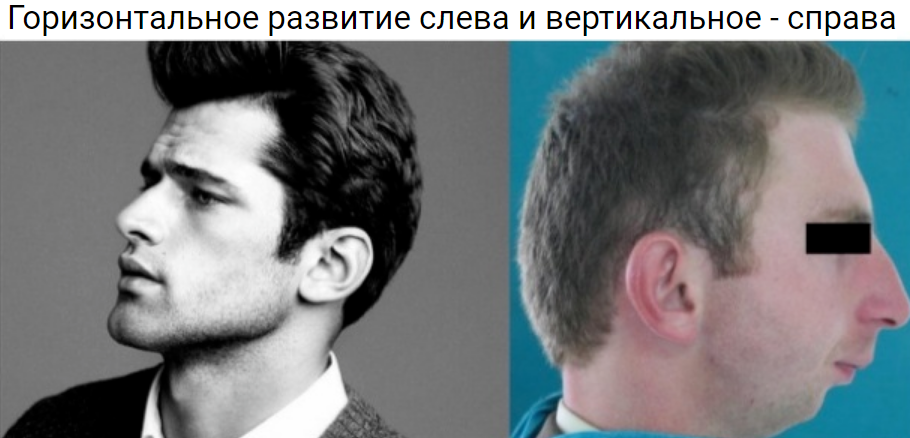

Наше тело имеет три жизненно важные функции: дыхание, жевание и глотание. Это та основа, на которой строится здоровье всего организма. Выстраивая нормальную функцию - мы создаем условия для правильной структуры. Гармонично развитое лицо и тело - это правильная структура, начинающаяся с правильно осуществляемых функций организма.
Дыхание должно осуществляться строго через нос. Только во время носового дыхания наш язык располагается наверху, на нёбе. Если человек начинает дышать ртом (пусть даже неосознанно, во сне, например) - его язык тут же опускается вниз и перестает быть опорой нёбу. Поэтому чрезвычайно важно, особенно для детей, чтобы нос всегда свободно дышал, аденоиды нужно лечить сразу, как только появилась проблема, благо сейчас есть эффективные методы лечения и помимо их удаления.
Если вы дышите во сне ртом - попробуйте клеить первое время на ночь на рот пластырь, дабы переучить свой дыхательных аппарат
Чтобы носовое дыхание было максимально эффективным - дышать нужно правильно. Проведем тест. Возьмите зеркало, втяните с силой воздух через нос и посмотрите, что делают в момент вдоха ваши ноздри- они должны расширяться, пропуская воздух через средний и нижний носовой ход. Это позволяет пропускать как можно больше воздуха в легкие. Если ваши ноздри сужаются на вдохе, это так называемый "нюхательный тип", когда воздух через верхний носовой ход попадает в обонятельный анализатор. При этом типе дыхания человеку может не хватить воздуха (например, волнение, физические нагрузки) и тогда он, сам того не замечая, открывает рот для дыхания, а, следовательно, язык опускается вниз.
Если вы ходите в спортзал, проведите интересный эксперимент - начните наблюдать за спортсменами, идеально на кроссфите, где нагрузки очень интенсивны.
Одни из них открывают рот и тяжело дышат, как правило согнувшись и сгорбившись, а другие дышат, раздувая ноздри и широко вздымая грудь. А теперь взгляните на их тип лица: как правило у тех, кто дышит ртом лицо будет вертикально развитым, а у раздувающих ноздри - с красивым горизонтальным развитием максилл! Видимо, тут есть какая-то прямая взаимосвязь!
Для того, чтобы облегчить ротовое дыхание, опускается нижняя челюсть. Приспускается также и язык – он полностью ложится на нижние зубы.
При носовом дыхании язык располагается ближе к небу, и такое положение позволяет уменьшить давление со стороны щек. А вот при ротовом дыхании давление не уменьшается, от чего теряется естественный баланс.
Это вызывает деформацию верхней челюсти: вместо правильной U-образной формы, челюсть образует искривлённую V-образную дугу.
Также это вызывает нарушение глотания. Получается, во время глотания язык располагается на боковых резцах, что препятствует нормальному прорезыванию зубов и формирует неправильный тип глотания. Подобное может привести к патологиям прикуса, так как из-за постоянно отрытого рта резцы начинают выдаваться вперед.
В результате развивается деформация, при которой резцы и клыки прорезаются выше остального нижнего ряда. Из-за этого при смыкании челюстей происходит преждевременный контакт, и нижняя челюсть смещается со своей физиологической траектории движения. Верхняя челюсть оттесняет нижнюю, что заставляет мыщелок височно-нижнечелюстного сустава дистально сдвигаться назад, а диск ВНЧС сдвигаться вперед. При открытии мыщелок смещается к диску, чтобы вернуть суставу нормальную позицию, но при закрытии рта сдвигается обратно к неправильному положению. Хрящ изнашивается, поэтому челюсть начинает щелкать.
К тому же, образуется повышенный тонус мышц, начинаются мышечные спазмы, которые могут вызвать острую головную боль.
Неправильное положение нижней челюсти может привести к парафункциональной (непроизвольной) активности мышц – например, бруксизму (скрежет зубами), что в свою очередь может привести к стиранию зубной поверхности. Зубы становятся еще короче, нижняя челюсть смещается еще дальше, а прикус становится аномальным.
Со временем в ВНЧС происходят дегенеративные изменения: сустав деформируется, его сухожилия повреждаются. Полностью изменяется положение суставного диска по отношению к мыщелку. Хоть и щелчок при движении челюсти может пропасть, рот не будет открываться полностью. Дистально смещенная челюсть приводит к еще более ограниченному воздушному потоку.
Чтобы воздух шел свободнее, шея двигается вперед, а голова слегка наклоняется, что изнашивает мышцы спины и увеличивает напряжение в позвоночнике. Как результат, появляются дополнительные боли в спине, плечах и шее.